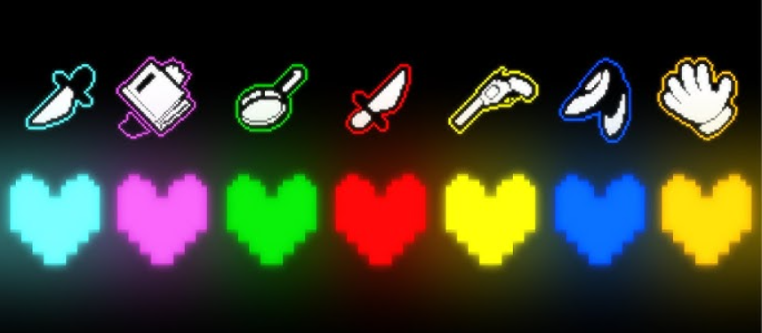
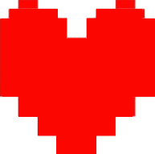
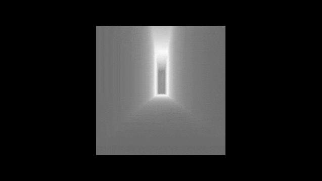
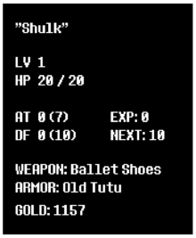

As almas em Undertale representam traços de personalidade humanos que determinam suas habilidades únicas no jogo, como mover-se de forma diferente ou usar ataques específicos, sendo a Alma Vermelha, a Alma de Determinação, a mais importante, permitindo o jogador salvar e carregar, enquanto as outras seis almas coletadas pelos monstros a partir dos humanos anteriores, Alma Ciano - Paciência, Alma Laranja - Coragem, Alma Azul - Integridade, Alma Roxo - Perseverança, Alma Verde - Bondade, Alma Amarelo - Justiça, são essenciais para a trama e para a manipulação de Flowey.
Quando um monstro morre, seu corpo se desfaz em poeira e sua alma se quebra quase imediatamente, não conseguindo permanecer intacta após a morte. Diferente das almas humanas, que são fortes o suficiente para existir sem um corpo e atravessar a barreira mágica, as almas dos monstros não possuem determinação suficiente para manter sua forma sozinhas. Os monstros possuem apenas pequenas quantidades de determinação, e a exposição a grandes doses dessa energia causa instabilidade extrema. Isso é visto nos experimentos do Laboratório Verdadeiro, onde a determinação faz com que corpos e almas de monstros se fundam e percam sua forma original, dando origem aos chamados amálgamas.
No universo de Undertale, as almas humanas são extremamente poderosas e funcionam de maneira oposta às almas dos monstros. Elas são compostas principalmente de determinação, uma força que permite aos humanos resistirem à morte, persistirem mesmo após o corpo físico ser destruído e desafiarem as regras normais do mundo. Diferente dos monstros, o corpo humano é majoritariamente físico, enquanto a alma é uma entidade separada e estável. Quando um humano morre, sua alma permanece intacta, podendo existir sem o corpo por um longo período de tempo. Essa característica é o que torna possível atravessar a barreira mágica criada pelos monstros, algo que apenas almas humanas conseguem fazer.
No passado, ambas as raças viviam juntas na superfície, até que os humanos descobriram que os monstros eram capazes de absorver almas humanas, obtendo um poder imenso. Temendo essa possibilidade, os humanos iniciaram uma guerra. Por possuírem corpos físicos mais resistentes e almas ricas em determinação, os humanos venceram o conflito. Como resultado da guerra, os humanos selaram os monstros no subsolo por meio de uma Barreira mágica criada apartir do poder das sete almas humanas. Essa Barreira foi criada de forma que apenas almas humanas conseguem atravessá-la naturalmente. Monstros não conseguem passar, independentemente de sua força, a menos que absorvam uma alma humana. A Barreira só pode ser completamente destruída com o poder equivalente a sete almas humanas
Em Undertale, os acrónimos mais comuns incluem EXP (Execution Points), LV (Level of Violence), DT (Determination), HP (Health Points/HoPE), ATK (Attack), DEF (Defense), e KR (Karmic Retribution), além de conceitos como ALMA (Soul), SAVE, LOAD, RESET, GOLD, MTT (MechaTronic Technology), e CORE (Central Processing Unit/Central Operating Research Engine), com interpretações variando entre siglas oficiais e teorias de fãs (como HoPE para HP).
